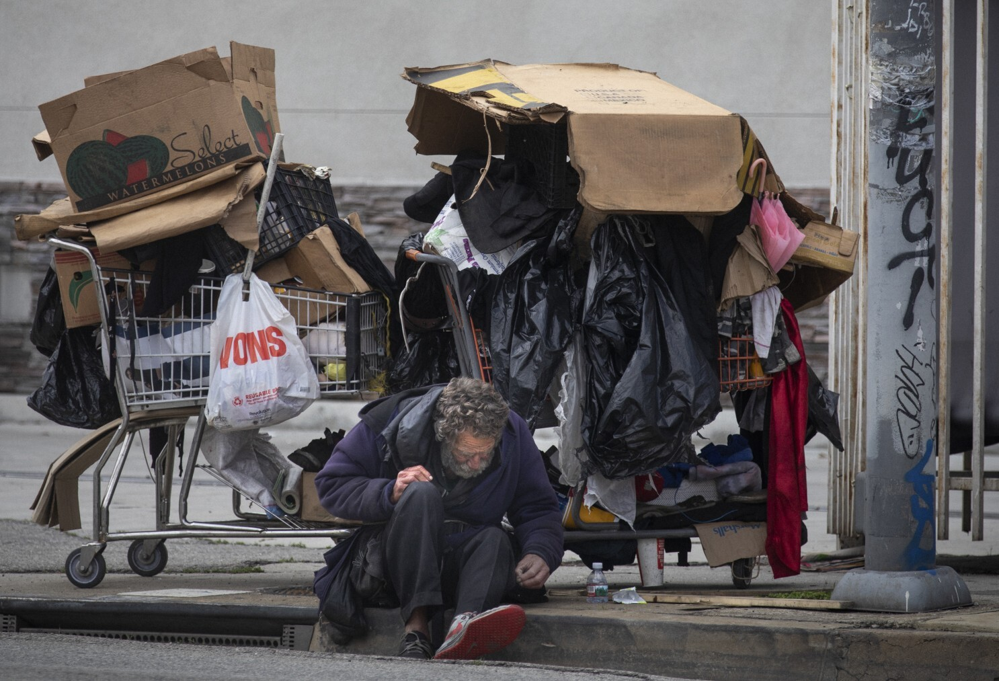
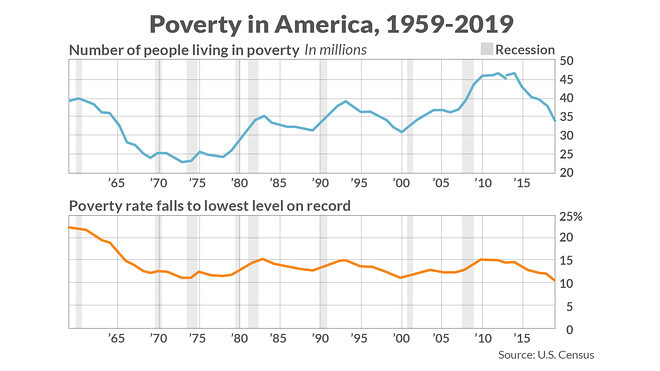
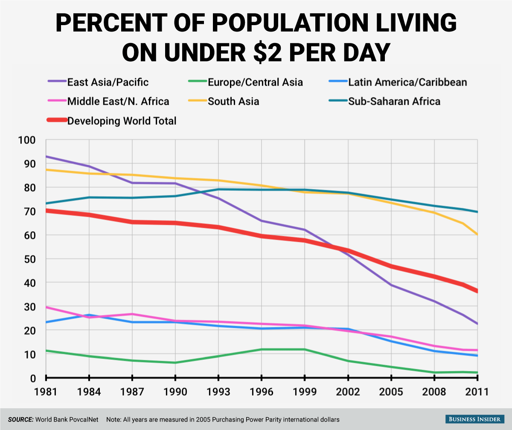
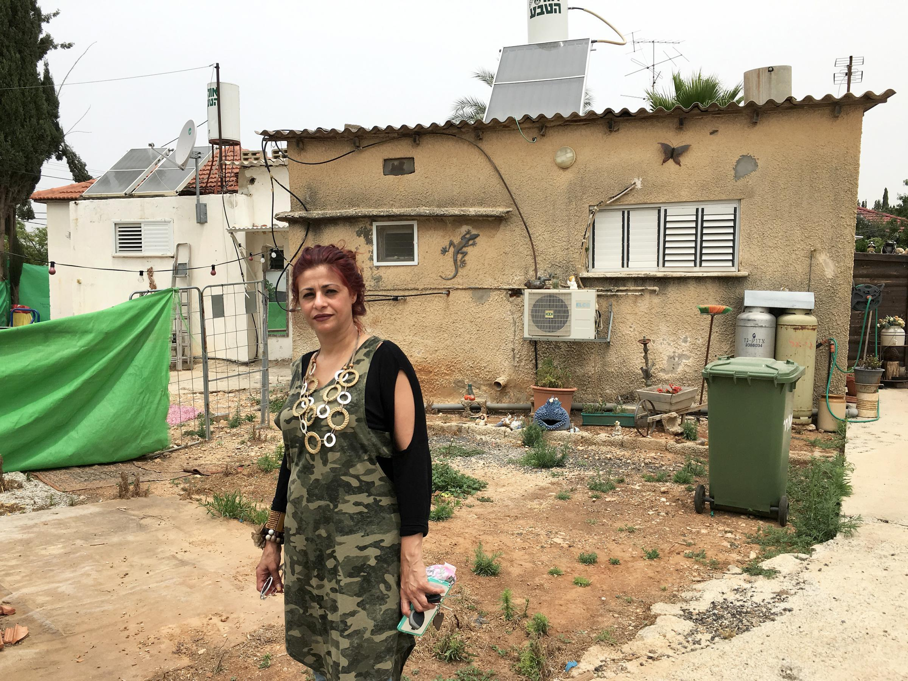

Learn More
There are a lot of people that are living on the streets. And they don't have any where to go, some go and beg on the streets or subways to get money and buy something to eat.
In the city there are more than 8.3 million people that are nearly one of 106 people are homeless. There are about 80,000 that are homeless men, children and women.
There are about 4,000 people that sleep on the streets, subways/ subways station, or in public spaces.
The pitcure above shows how many homeless people have grew over time from 1959 to 2019
As you can see there the numbers didn't get lower they got bigger and bigger. And now they are every were you go either on the streets, or train's
This is why we should help the homless people find jobs and places to work and get money
Poverty World wide
There is about 9.2% of the world, or 689 million people world wide that are in poverty, and they are living off of $1.90 or less a day, which is called extreme poverty, according to the world bank.
As you can see at the image above you can see that there are 7 different lines and you can see that the red line is a little bit thicker then the other ones
These people in those continents are sometimes living under $2. Europe/ Central Aisa have the lowest amount of poverty and the rest. In the East Asia/ Pacific and south Seem to have the most people in poverty from 1981 until 2011, when 1999 came Latin America/ Caribbean people in poverty increased from 75% to 80%.
Child poverty

As you can see Israel, Turkey, and Mexico have the biggest percentage of poverty, compared to the rest of the world and that Denmark has the lowest percentage.
Also about 385 million children around the world live's in poverty. Every 3.1 million children die due to poor nutrition
As you can see in the background the house that is in Isreal is not built like the house that you will see in New york. They are made out of poor material
And the streets are different. They are just dirt and it is not a paved road, the fences are not strong they are just made out of some metal parts